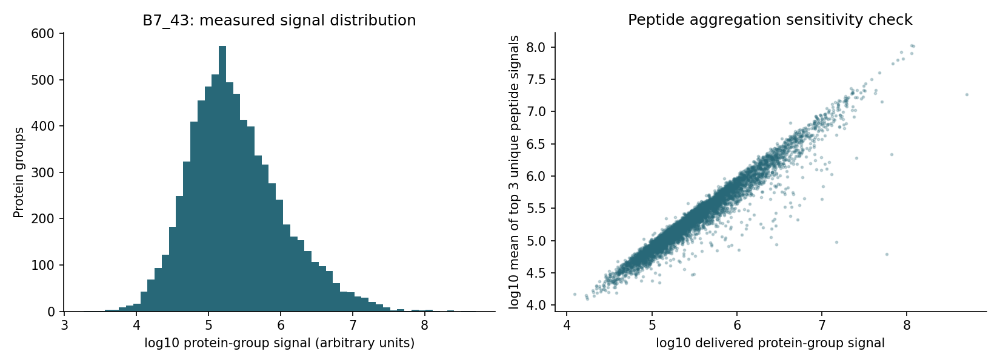
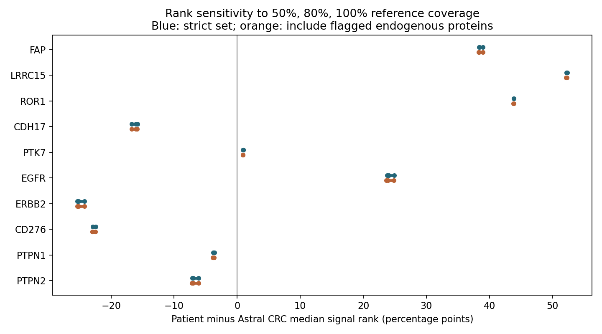
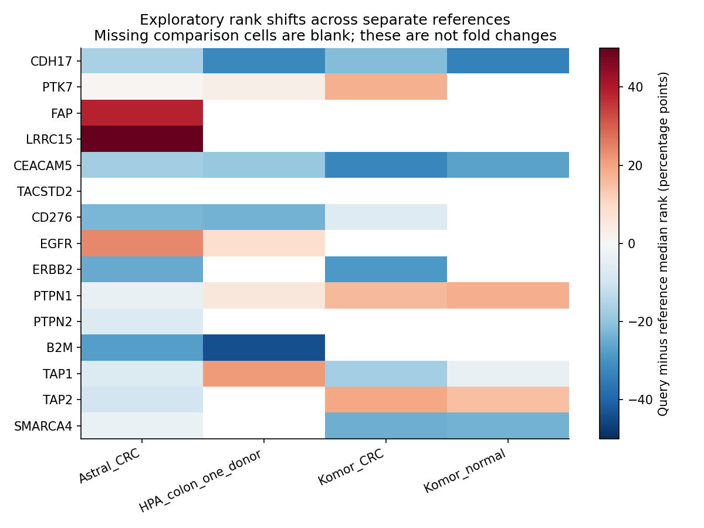

What the new analysis changes
The data strengthen several investigational target-validation leads, but do not establish a new approved treatment indication. FAP and LRRC15 are the clearest stromal signals; ROR1 deserves a conditional second-tier look. CDH17 and PTK7 have strong identification support, although this sample is not unusually high for those proteins in the most comparable CRC reference. These are leads for an oncology/molecular tumour-board discussion and current-lesion validation, not estimates of response probability.
- FAP radioligands remain a serious investigation priority. Fourteen distinct target-specific peptide sequences support detection. Its relative signal is elevated against the Astral CRC reference and remains elevated after comparison with a fixed extracellular-matrix marker panel. The decisive next evidence is current-lesion, programme-specific FAP imaging and dosimetry—not the archival bulk quantity alone.
- CDH17 ADCs have the strongest combination of robust target detection and new human CRC evidence among the newly emphasized epithelial targets. CDH17 has 22 unique sequences. ARR-217/MRG007 and AMT-676 have early clinical CRC signals; present-day tumour membrane staining and protocol eligibility would make this actionable as trial screening. The protein result supports presence, not overexpression.
- LRRC15 and ROR1 warrant more selective investigation. Both have conspicuous exploratory rank shifts and multiple unique peptides. LRRC15 may be stromal; ROR1's malignant-cell surface localization is unproven. Human CRC efficacy and realistic access are much less established than for CDH17 or MET ADCs.
- CEA and MET remain relevant for reasons beyond this proteome. Strong prior metastatic CEA IHC remains useful. MET non-detection in this treated primary does not negate a different specimen's IHC or the emerging MET-unselected Temab-A evidence.
- The proposed immune strategy remains experimental. HLA-I, B2M, TAP1/2 and PTPN1/2 are detected, but this does not establish malignant-cell antigen presentation, phosphatase dependence, checkpoint sensitivity or a safe/effective FAP-radiation/checkpoint/IL-12/15/vaccine/AC484 combination.
A consequential correction: the vendor's “AO/control” values are exactly the public HPA colon reference, not a matched patient normal. Run 423 is a separate unexplained column. Neither provides a valid patient tumour-versus-normal comparison. No patient differential-expression P values are used here.
Specimen identity and the two controls
The delivered vendor report explicitly maps FZPR260000422-1A → B7_43. Existing primary pathology and Signatera records map B7 to the rectal low anterior resection collected 22 October 2024, UCLA SSW-24-27123, after neoadjuvant treatment. B6–B7 were lesion cross-sections in relation to uninvolved mucosa and the radial margin. This is an archival treated primary, not the October 2026 nodal biopsy. The suffix _43, exact submitted sections and B7-specific viable tumour percentage remain unverified. The vendor project's B1_43 suffix is not evidence that the submitted pathology block was B1.
The relevant original pathology packet is the April 2026 add-on packet containing the original surgical report. The accession/block audit and narrower provenance limitations are recorded in the provenance review.
| Label | What is verified | Appropriate use |
|---|---|---|
| Run 422 / B7_43 | Vendor sample table and quantitative matrix/workbook agree | Patient protein signal and peptide-support analysis |
| Run 423 / workbook “control” | Quantitative values agree across delivered tables; specimen identity unknown | Retain for provenance only; neither normal tissue nor an assumed technical replicate |
| AO / differential-report “control” | All 4,186 positive entries exactly equal HPA colon tissue-summary intensities by gene; independently corroborates the supplied analyst tracker | External one-donor context only; not a contemporaneous biological control |
The report's B7 quantities are the native run-422 values multiplied by 1.052755. Its control column is not run 423. Their high run-422/run-423 log-signal correlation (0.9898) cannot establish the identity or reproducibility of either specimen. The user confirmed that the control identities were not known to them; no normal-tissue assumption was made from the labels.
The vendor report claims 486 significant differences, while its stated two-fold plus P-value rule actually retains 458. More fundamentally, its Significance-A calculation compares one patient sample with an external reference and does not estimate replicated patient biological variation. Those calls and pathway enrichments based on them are not treated as patient-specific differential expression.
Data acquired and identification quality
The three processed vendor archives, shared analysis outputs/code/configuration, public reference snapshots, original explorer and tracker were downloaded or preserved locally: 69 files, 529,886,035 bytes, before extraction and newly retrieved public datasets. The three processed ZIPs all match the provider's published MD5 checksums; public input/reference SHA-256 values are in the download manifest; the original acquisition manifest is retained locally. Supplied scripts were inspected as source material, not executed. The new analysis scripts are separate.
Raw-spectrum limitation: the 8.86 GB exposed instrument file is run 423; the 12.35 GB raw archive was not downloaded. The connector rejected the file size and the browser blocked the direct download. The archive's contents were not inspected, so it may contain run 422. No raw-spectrum re-search, retention-time/fragment review or independently reconstructed FDR is claimed. The processed tables include run 422 and support the analyses below.
| Quality measure | Result |
|---|---|
| Delivered protein groups | 7,755 |
| Positive run-422 protein-group measurements | 7,706 |
| Quantified precursor rows | 75,443 |
| Distinct unmodified peptide sequences across the run | 65,284 |
| Strict analysis set: single gene, ≥2 unique sequences, no contaminant-library flag | 6,465 genes |
| Inclusive sensitivity set retaining flagged endogenous proteins | 6,487 genes |
| Disagreements with vendor unique-peptide counts | 0 |
| Positive protein signal range | 5.45 orders of magnitude |
Among detected groups, 1,059 have only one unique sequence, 37 only shared-peptide evidence, and 116 ambiguous gene assignment under the mutually exclusive QC hierarchy. Twenty-six additional groups are flagged by the contaminant library; this does not prove contamination. KRT8/18/19/20 are plausible endogenous epithelial proteins with strong peptide support and are retained in the inclusive sensitivity analysis. The library flag is preserved for inspection.
The search FASTA contains 20,422 human sequences. Twenty-five exact gene-name disagreements between the HPA mapping and FASTA all retain matching UniProt accessions; they are recorded in the symbol audit, predominantly as nomenclature differences. None affects the main FAP/LRRC15/ROR1 findings. Multiple qualifying groups for one gene are represented by the largest measured group, with multiplicity recorded, not summed as separate molecules.
The vendor reports approximately 1% identification filtering, but its methods describe different DIA-NN confidence fields and the matrices do not include their q-values. Multiple peptides strengthen support; they do not independently establish a 1% target-level error rate. Distinct missed-cleavage sequences can overlap and are not independent biological replicates.
An additional sequence audit searched all 151 reported unique sequences for 18 key targets against the delivered FASTA, both exactly and treating isoleucine/leucine as indistinguishable. Every sequence matched its assigned target. All FAP/LRRC15/ROR1/CDH17/PTK7 sequences remained target-gene-specific. One HLA-C peptide becomes indistinguishable from fully tryptic HLA-B/E sequences under I/L equivalence; three HLA-C peptides remain specific within this database. One SMARCA4 and one TAP1 sequence have alternative matches only with noncanonical tryptic boundaries. These are useful specificity cautions, not evidence that the whole identifications fail. The reference FASTA is not a personalized HLA/isoform database, and this audit does not inspect spectra. Peptide audit.

How relative expression was quantified
The primary output is the native delivered protein-group signal, in arbitrary units, together with accession/group identity, unique-sequence count, coverage, and a within-sample signal rank. A rank of 80 means this signal exceeds roughly 80% of measured protein-group signals. It is not 80% expression, an 80th percentile among patients, or a molecule-count ranking across proteins.
An additional Top3 peptide aggregation sums measured charge and modification states for each distinct proteotypic sequence, then takes the mean of the three strongest sequences. At least three sequences are required. This checks aggregation sensitivity using the same measurement; it is not calibrated Top3 concentration. Its overall Spearman correlation with delivered protein signal is 0.969. The exact quantity field and settings cannot be reconstructed from the versionless matrix alone. DIA-NN documentation distinguishes its protein quantity fields and confidence filters; MaxLFQ and Top3 methods do not make uncalibrated intensities equivalent to molecule counts.
For each public reference separately, the main rank comparison uses genes measured in the patient strict set and at least 80% of reference columns. Each sample is ranked within that anchor set; the patient's rank minus the reference median rank is reported in percentage points. Reference missing values remain missing. Detection counts are exported independently of the anchor filter. Sensitivity checks use 50% and 100% coverage thresholds, inclusion of flagged endogenous proteins, and fixed compartment-marker ratios. Pairwise matched-gene reranking independently gives very similar lead-target shifts.
Median-centred log2 contrasts are available in the data tables as exploratory signal summaries. They are not validated tumour/reference fold changes. Preparation, fixation, digestion, instrument, search, quantification and cellular composition are confounded with patient-versus-reference status. No quantile normalization, ComBat correction, missing-value substitution, patient P values or invented biological replicates are used to obscure that limitation. Tissue composition is described, not converted into an unvalidated tumour-purity percentage. These choices follow the cautions in directLFQ and published missing-value benchmarks.
We did not manufacture patient iBAQ by dividing protein intensity by protein length. Genuine iBAQ needs an appropriate summed peptide intensity and theoretical observable-peptide denominator. Instead, an independently published iBAQ resource supplies separately labelled public abundance context.
Public reference coverage and compatibility
| Reference | Sample columns | Genes detected anywhere | Main anchor genes | Median Spearman with patient |
|---|---|---|---|---|
| Astral_CRC | 27 | 10918 | 6282 | 0.76 |
| Komor_CRC | 30 | 5012 | 3124 | 0.58 |
| Komor_normal | 19 | 4846 | 2409 | 0.59 |
| HPA_colon_one_donor | 3 | 4928 | 3571 | 0.61 |
Astral CRC, PXD073413: 27 CRC samples, 13 KRAS-mutant and 14 wild-type; pooled QC columns excluded. Same instrument family makes this the most relevant available signal-rank comparator, but not a batch-matched or post-treatment rectal-resection reference. The exported matrix used here contains tumours; adjacent normal tissues mentioned in the study description were not assumed to be present. The dataset is now linked to a published study.
Komor, PXD012254: the quantitative export has 30 cancer and 19 normal run columns. The paper describes 18 normal samples, and a donor/repeat crosswalk was not resolved. These are therefore run-level contextual summaries, not 19 verified independent normal donors. This older, shallower Spectronaut dataset has appreciably lower overlap with the patient than Astral.
HPA colon: three tissue measurements from one healthy female donor, not a healthy-population cohort. The published method is FFPE, Astral Zoom, DIA-NN and directLFQ. This is useful preparation context, but normal colon layer composition and batch differences remain. The vendor's AO control is this resource's colon summary. HPA methods.
CPTAC paired TMT context: 96 matched tumour/normal case IDs; 5,807 genes met the ≥10-pair criterion. Within-study paired differences, Wilcoxon tests and Benjamini–Hochberg FDR were computed only inside that public cohort. They do not test this patient. TMT reference-channel quantities are not directly subtracted from the patient's DIA signal. CPTAC PDC000116.
Independent public iBAQ context: downloaded the Robles et al. harmonized solid-tissue resource from PRIDE. It contains 8,949 genes and 274 annotated sample columns: 143 tumour, 70 mucosa and 61 adenoma across five datasets. We export detection fractions and positive-value median/IQR separately for ten dataset/tissue groups; no cross-platform pooled distribution or patient percentile is calculated. Ninety CPTAC participants are verified by barcode; other donor counts/pairing remain unresolved. Coverage ranges from 169 to 7,556 genes per sample. A numerical non-sample peptide-count column was excluded, and two standalone SDRF annotation discrepancies are documented. Context table (gzip) · sample metadata · inspection audit.
These resources are complementary, not necessarily statistically independent replications. HPA IHC provides compartment/normal-tissue context, while the supplied SURFY/CSPA, Pharos and Open Targets 26.09 snapshots support broad target screening. Current clinical claims were checked against primary publications, labels and registry records rather than accepted from database drug-name matches.
Key quantitative findings
| Protein | Unique sequences | Within-sample signal rank % | Exploratory Astral rank shift, points | Astral detected / 27 |
|---|---|---|---|---|
| FAP | 14.00 | 78.89 | 38.41 | 27 |
| LRRC15 | 8.00 | 65.11 | 52.37 | 26 |
| ROR1 | 6.00 | 52.04 | 43.87 | 25 |
| CDH17 | 22.00 | 80.21 | -16.04 | 27 |
| PTK7 | 19.00 | 74.09 | 0.91 | 27 |
| GPA33 | 9.00 | 85.18 | -12.72 | 27 |
| CEACAM5 | 3.00 | 82.47 | -17.52 | 27 |
| EGFR | 13.00 | 65.66 | 24.04 | 27 |
| CD276 | 5.00 | 33.26 | -22.91 | 27 |
| ERBB2 | 7.00 | 23.89 | -25.12 | 27 |
| PTPN1 | 11.00 | 64.12 | -3.79 | 27 |
| PTPN2 | 3.00 | 37.39 | -6.96 | 27 |
| B2M | 3.00 | 73.73 | -27.69 | 27 |
| GUCY2C | 2.00 | 17.29 | 0.52 | 26 |
| NT5E | 13.00 | 76.82 | 19.32 | 27 |
| SMARCA4 | 4.00 | 48.83 | -3.32 | 27 |
| MTAP | 11.00 | 85.15 | -0.06 | 27 |
FAP, LRRC15 and ROR1 show robust positive rank shifts; CDH17 does not. Across the tested anchor/contaminant choices where each target remains eligible, FAP shifts +38.3 to +39.0 points, LRRC15 +52.2 to +52.4, and ROR1 +43.8 to +43.9. CDH17 shifts −16.7 to −15.8; PTK7 is approximately unchanged (+0.9 to +1.0). These stable patterns justify validation priorities, not clinical overexpression thresholds. The reference detection denominators are 27/27, 26/27 and 25/27 for FAP/LRRC15/ROR1, respectively.
Reference depth matters: FAP is detected in 21/30 Komor CRC runs, despite being excluded from that main ≥80%-coverage rank comparison. LRRC15 is detected in only 1/3 HPA colon measurements; ROR1 in 1/30 Komor cancers and 2/19 normal runs. Blank rank cells mean no eligible comparison, not proven absence. The older iBAQ CPTAC tumour resource detects FAP in 40/90, LRRC15 in 13/90, PTK7 in 74/90 and CDH17 in 87/90 samples; absence in a shallower assay is not an estimate of biological prevalence.
MET and TACSTD2/TROP2 are not detected in the run-422 protein-group table. EGFR is detected and has a positive Astral shift; this does not establish panitumumab sensitivity after prior exposure. ERBB2/HER2 and CD276/B7-H3 are detected but lower in the Astral rank comparison. Nothing here overturns prior HER2 IHC0/no established amplification or turns a low TROP2 phenotype into a strong approved-drug match.
In the separate paired CPTAC cohort, FAP's median tumour-minus-normal log2 signal is +1.31 (82/96 pairs positive), PTK7 +0.39, CEA +0.99, and CDH17 −0.38. These are public CRC tissue effects, not this patient's fold changes. LRRC15 and ROR1 lack retained paired estimates and cannot inherit FAP's corroboration.


Composition, RNA concordance and immune interpretation
The tissue is mixed, with especially strong muscle and matrix signals. DES, CNN1, MYH11 and TAGLN are all among the top approximately 0.2% of measured signals. COL1A1/2, FN1, LUM and DCN are also abundant. This fits a treated lesion/radial-margin resection containing bowel wall and fibrosis, but histology is required to quantify the source. Strong KRT8/18/19/20 and other epithelial signals are retained; this is not evidence that epithelial tissue is absent.
An explicit denominator sensitivity check makes the limits visible. Relative to the geometric mean of DCN, LUM, COL1A1, COL1A2, COL3A1, FN1 and POSTN, the patient's FAP and LRRC15 log2 signal ratios exceed the Astral reference medians by +1.11 and +2.10, respectively. Using DES, CNN1, MYH11 and TAGLN instead reverses those differences to −1.70 and −1.13. ROR1 is +2.90 against the ECM panel but −0.40 against muscle. CDH17 is essentially unchanged against an eight-marker epithelial panel (+0.02), despite its negative whole-proteome rank shift. These answer different composition questions; none is a validated per-cancer-cell fold change. Full sensitivity table.
Prior RNA is supportive context, not a substitute for protein localization. The join retains the March 2024 Caris rectal biopsy, October 2024 B4 Tempus/BostonGene resection assays, and liver single-cell data as separate sources. Their whole-gene RNA/protein rank correlations are modest (Caris 0.266, Tempus 0.392, BostonGene 0.452), as expected for different tissues, times, composition and pipelines. Caris/Tempus TPMs are research re-quantifications, not interchangeable clinical assay scales; BostonGene percentiles are vendor-reported.
ROR1 has a prior B4 BostonGene RNA percentile of 100, but sparse liver tumour-cell RNA detection (~2.65%). FAP/LRRC15 liver single-cell signals are principally stromal in the prior summary; CDH17/PTK7/CEA have malignant-cell RNA support. These observations help select spatial tests but cannot show that the same protein is expressed on present nodal cancer-cell membranes. Single-cell dropout and annotation uncertainty make a zero fraction different from proven absence. All joined targets.
Antigen-presentation machinery is present somewhere in the specimen. HLA-A/B/C, B2M, TAP1/2, TAPBP, STAT1 and immunoproteasome components are detected. B2M is relatively lower in the Astral comparison (−27.7 rank points), and the panel is not uniformly elevated. Nodal immune cells could supply strong HLA/B2M background. Detection does not prove retention of the relevant HLA allele, natural presentation of a vaccine neoepitope, or tumour-cell recognition. The supplied search is not immunopeptidomics or a personalized mutant-peptide search. A CRC organoid study directly illustrates that HLA expression and predicted mutations do not guarantee detectable mutant ligands.
PTPN1 (11 unique sequences) and PTPN2 (3) are present but not elevated in the Astral rank comparison (−3.8 and −7.0 points). Total protein cannot establish phosphatase activity, IFN-signalling dependence or AC484 response. PTPRC/CD4/CD163 support immune admixture. CD3/CD8 and most cytotoxic markers were not detected; PRF1 had only single-sequence support. This does not prove an immune desert. No numerical immune-cell fraction or exclusion mechanism is inferred.
SMARCA4 is retained in bulk protein (4 unique sequences); a missense variant plus this signal does not establish complete SMARCA4 protein loss or synthetic-lethal drug eligibility. MTAP is also retained (11 sequences), which does not select an MTAP-deletion strategy or exclude a tumour-specific loss masked by other cells. PARP1, ATM, TOP1 and pathway-protein detection do not establish HRD, DNA-repair dependence or chemotherapy sensitivity. This is total proteomics, not a phosphoproteomic activation assay.
Therapeutic implications and realistic priorities
| Priority for discussion | What supports it | What would make it more actionable |
|---|---|---|
| CDH17 ADCs: ARR-217/MRG007, AMT-676 | 22 unique sequences; new human CRC activity | Current tumour membrane CDH17 staining and actual cohort eligibility; no approved CRC indication |
| FAP radioligands, as one therapeutic category | 14 sequences, positive rank and ECM-relative signals | Current programme-specific FAP PET, retention/dosimetry and coverage of relevant lesions; current recruiting cohort/site confirmation |
| CEA ADCs and MET ADC Temab-A | Strong prior metastatic CEA IHC; CRC clinical evidence for both classes; latest MET trial was expression-unselected | Current protocol eligibility and tissue assay if required; prior-line, GI/bleeding and bevacizumab constraints where applicable |
| PTK7 ADCs | 19 sequences, credible target presence | Current membrane staining; CRC acceptance and payload-exposure rules; no verified human CRC efficacy here |
| LRRC15 ADC ZL-6201 | 8 sequences and high exploratory relative signal | Separate fibroblast versus malignant-cell staining; ≤3 prior-line gate may constrain access; no verified human CRC efficacy |
| ROR1-directed trials | 6 sequences, stable rank signal, prior RNA support | A feasible accepting CRC trial first, then qualified tumour-membrane IHC; currently a conditional research lead |
| B7-H3 / PTK7×B7-H3 trials | CD276 detected, but not B7-H3-high by this comparison | Same-cell membrane coexpression for a dual construct; several programmes have line or recent-irinotecan exclusions |
Two clinical updates matter independently of the proteomics. The 25 October ARR-217 sponsor disclosure reported 13/29 responses at 6 mg/kg, but only 7/29 (24.1%) were confirmed at that cutoff; the 44.8% headline includes pending/unconfirmed responses. This is encouraging early, uncontrolled evidence, not an established response probability for this patient. Primary disclosure.
The 24 October randomized phase-I Temab-A/bevacizumab publication enrolled 83 treated patients: 63 across two Temab-A doses and 20 on trifluridine-tipiracil/bevacizumab. Responses were 19% and 30% versus 0%, with median PFS 5.6/6.8 versus 4.2 months. Small exploratory groups limit certainty; the trial did not select by MET expression. This strengthens a clinical-trial discussion despite MET non-detection here. Primary publication.
The broader database search did not reveal a new approved match. The inclusive set contains 760 proteins annotated by SURFY and/or CSPA and 612 genes with at least one Open Targets drug-candidate record, producing 3,940 target–drug rows. These are screening leads, not 612 actionable targets. Records include supportive-care drugs, broad polypharmacology, abandoned agents, binding partners and ADC payload targets. In particular, tubulin or TOP1 matching an ADC does not identify its tumour-surface antigen. Full screen · database edges.
GPA33 (9 sequences), GUCY2C (2) and EphA2 (4) retain possible research relevance, but the measurements do not upgrade their clinical evidence. CD73/NT5E is detected (13 sequences), which does not establish adenosine-mediated resistance. Integrins/endoglin and many kinase/repair proteins also appear in the screen without a validated CRC expression-selected indication.
What this does not justify: HER2 therapy from ordinary ERBB2 detection despite IHC0; off-label Trodelvy from a TROP2 hypothesis; PARP inhibitors from PARP1 abundance or an unproven HRD variant; venetoclax from BCL2 detection; PTPN inhibition from total enzyme quantity; or abandoning an otherwise relevant drug because its target was not measured. Current approved molecular pathways remain governed by their actual biomarker requirements. The 2026 TROPHIT1 final abstract reported only 5% confirmed response despite TROP2 staining in 18/20 evaluable samples, reinforcing the distinction between presence and efficacy. Primary abstract.
Trial records were checked on 29 October 2026; recruiting status does not guarantee a slot, CRC cohort acceptance, personal eligibility, UK access or funding. Full primary-source details and specific prior-treatment restrictions appear below.
FAP radiation within the proposed immune strategy
The proteome supplies a coherent hypothesis: a FAP/LRRC15-rich compartment might be addressed with stromal radiation, while immune activation and vaccination supply or amplify effectors. It does not establish that this compartment causes resistance, that current nodes share the phenotype, or that combining all components improves outcome.
The most concrete FAP routes are Lu-177 NNS309 (NCT06562192), Lu-177 OncoFAP-23 ± L19-IL2/“TheraTri” (NCT06640413), and LY4337713/FiREBOLT (NCT07213791). Each has its own imaging and eligibility requirements. TheraTri is particularly relevant as a protocol exploring radioligand plus an immunocytokine, but it uses IL-2, not IL-12/15; L19 targets ED-B fibronectin. CRC acceptance, combination activation and slots require site confirmation. Diagnostic uptake alone may not predict therapeutic retention or absorbed dose. FAP imaging guideline · TheraTri · NNS309 · FiREBOLT.
FAP radioligand/checkpoint synergy has preclinical CRC support; the cited human component was small and did not test the full checkpoint combination. Radiation can also reduce lymphocyte populations, so immune benefit cannot be assumed. Primary FAP study.
The closest human caution is QuICC: CEA/MUC1 vaccine + IL-15 agonist + PD-L1/TGF-β blockade produced 0/12 responses; adding targeted IL-12 produced 1/20. Participants were checkpoint-naive, and the vaccine was not personalized. This does not establish the proposed strategy after BOT/BAL, nor does one responder identify a predictive nodal phenotype. Primary QuICC report.
AC484/PTPN1–PTPN2 inhibition remains a research addition. Its mechanism and newer CRC models support testing IFN responsiveness, CXCL9/10/11 induction and T/NK-cell effects; no abundance cutoff or proven human MSS-CRC benefit is established. Current human response evidence is from other tumour settings. Expanded-access listings do not guarantee supply. The combined inflammatory effects of checkpoint blockade, cytokines and PTPN inhibition are not resolved by proteomics. A clinically supervised protocol is needed for combination selection and sequencing. Mechanism study · 2026 CRC preclinical study · AC484 trial.
A useful research test would assess native autologous tumour recognition/killing as well as IFN signalling and surface HLA/B2M. Increased pSTAT1, target-protein presence or predicted neoantigens alone are insufficient. Conventional TCR/vaccine strategies still require the relevant antigen–HLA complex; NK-mediated mechanisms are distinct and do not restore a missing specific complex.
CD73 provides a secondary adenosine-pathway hypothesis. Direct oleclumab CRC results have been weak. The positive randomized ARC-9 Cohort B instead tested the A2A/A2B antagonist etrumadenant, not a CD73 inhibitor, together with checkpoint therapy, FOLFOX and bevacizumab. It cannot isolate the adenosine drug's contribution or validate NT5E abundance, and prior checkpoint treatment was excluded. This is relevant biology, but it does not make CD73 IHC a validated selector for this patient. Primary ARC-9 report.
Highest-value validation with limited HCA nodal tissue
Preserve the small block by choosing tests around a realistic treatment route. Confirm retained FFPE tissue, viable carcinoma and available sections with HCA pathology; the earlier banking record does not establish whether a separate diagnostic block remains. No new tissue availability is assumed here.
- Pathologist review of a current H&E section: viable tumour area, necrosis and suitability for membrane scoring. Keep enough material for a sponsor's required assay or molecular test.
- CDH17 membrane IHC if a CDH17 trial is realistic; record intensity, positive malignant-cell percentage and heterogeneity. Add PTK7 if an accepting trial is available. Use the sponsor assay where mandated.
- FAP with stromal versus malignant-cell localization, optionally LRRC15 on a multiplex or adjacent section when it changes a feasible trial decision. For a radioligand route, current ligand-specific PET is more decisive than spending many sections on archival IHC.
- HLA-ABC and B2M on tumour membranes, with an epithelial tumour mask and spatial CD8 interpretation, if vaccination/TCR/immune rescue is the active question. Normal nodal lymphocytes are internal controls, not evidence of tumour-cell HLA retention or intratumoural CD8 infiltration.
- ROR1, B7-H3 and other exploratory stains only after access screening. ROR1 has a large exploratory reference-rank shift but much less CRC clinical evidence. For a dual PTK7×B7-H3 construct, establish same-cell membrane coexpression rather than relying on two bulk signals.
Retest CEA/MET or HER2 when required by a feasible protocol or contemporary clinical question; the proteomics alone does not mandate exhausting tissue on all of them. PTPN1/PTPN2 IHC is lower priority because no validated predictive cutoff exists. If anti-EGFR continuation/rechallenge is at issue, current RAS/BRAF/EGFR resistance assessment is more informative than the EGFR protein rank. Molecular HLA/antigen retention and functional recognition are separate from pan-HLA IHC.
For a true deeper proteomics reanalysis, obtain run-422 raw spectra, the exact specimen/run key including run 423 and _43, DIA-NN version and command/configuration, full long report with run/global precursor and protein q-values, library/FASTA provenance, extraction/microdissection details, and matched H&E/tumour cellularity. A batch-matched bridge/reference and genuine biological comparator would be needed for more defensible quantitative overexpression claims. These are the remaining evidence gaps, not reasons to discard the processed-data findings.
Search the quantified target panel
| Protein | Unique sequences | Signal rank % | Astral shift, points | Astral /27 | Komor CRC /30 runs | Komor normal /19 runs | HPA /3, one donor |
|---|---|---|---|---|---|---|---|
| EPCAM | 3.00 | 51.12 | -51.72 | 27 | 30 | 19 | 3 |
| CDH1 | 9.00 | 60.06 | -30.73 | 27 | 30 | 19 | 3 |
| KRT8 | 32.00 | 99.00 | nan | 27 | 30 | 19 | 3 |
| KRT18 | 26.00 | 97.65 | nan | 27 | 30 | 19 | 3 |
| KRT19 | 23.00 | 99.10 | nan | 27 | 30 | 19 | 3 |
| KRT20 | 20.00 | 88.61 | nan | 27 | 30 | 19 | 3 |
| VIL1 | 23.00 | 78.95 | -18.27 | 27 | 30 | 19 | 3 |
| LGALS4 | 10.00 | 97.85 | -1.83 | 27 | 30 | 19 | 3 |
| CDH17 | 22.00 | 80.21 | -16.04 | 27 | 30 | 19 | 3 |
| CEACAM5 | 3.00 | 82.47 | -17.52 | 27 | 30 | 18 | 3 |
| TSPAN8 | 2.00 | 56.36 | -39.97 | 27 | 0 | 0 | 3 |
| FAP | 14.00 | 78.89 | 38.41 | 27 | 21 | 0 | 0 |
| LRRC15 | 8.00 | 65.11 | 52.37 | 26 | 0 | 0 | 1 |
| COL1A1 | 24.00 | 99.69 | -0.21 | 27 | 30 | 19 | 3 |
| COL1A2 | 23.00 | 99.52 | 5.40 | 27 | 30 | 19 | 3 |
| COL3A1 | 10.00 | 95.12 | -0.99 | 27 | 25 | 4 | 3 |
| DCN | 16.00 | 98.59 | 1.05 | 27 | 30 | 19 | 3 |
| LUM | 14.00 | 99.07 | 0.29 | 27 | 30 | 19 | 3 |
| PDGFRA | 1.00 | 5.50 | nan | 27 | 0 | 0 | 3 |
| PDGFRB | 15.00 | 47.56 | 11.03 | 27 | 22 | 11 | 3 |
| FN1 | 84.00 | 99.34 | 3.89 | 27 | 30 | 19 | 3 |
| POSTN | 39.00 | 97.27 | 0.62 | 27 | 30 | 19 | 3 |
| THY1 | 4.00 | 95.93 | -0.09 | 27 | 28 | 14 | 3 |
| ACTA2 | nan | nan | nan | 0 | 30 | 19 | 0 |
| ACTG2 | 1.00 | 99.97 | nan | 27 | 11 | 9 | 3 |
| DES | 64.00 | 99.91 | 4.61 | 27 | 30 | 19 | 3 |
| CNN1 | 26.00 | 99.92 | 4.99 | 27 | 30 | 19 | 3 |
| MYH11 | 181.00 | 99.90 | 2.95 | 27 | 30 | 19 | 3 |
| TAGLN | 35.00 | 99.87 | 0.75 | 27 | 30 | 19 | 3 |
| PTPRC | 18.00 | 80.34 | 4.85 | 27 | 29 | 18 | 3 |
| CD3D | nan | nan | nan | 0 | 0 | 0 | 0 |
| CD3E | nan | nan | nan | 26 | 0 | 0 | 0 |
| CD8A | nan | nan | nan | 27 | 0 | 0 | 0 |
| CD8B | nan | nan | nan | 0 | 0 | 0 | 0 |
| CD4 | 3.00 | 7.43 | -5.45 | 27 | 0 | 0 | 0 |
| CD68 | nan | nan | nan | 26 | 0 | 0 | 0 |
| LST1 | 1.00 | 19.08 | nan | 0 | 0 | 0 | 0 |
| TYROBP | 1.00 | 2.87 | nan | 27 | 0 | 0 | 0 |
| CD163 | 8.00 | 38.13 | -39.08 | 27 | 26 | 19 | 3 |
| MS4A1 | nan | nan | nan | 21 | 0 | 0 | 0 |
| NKG7 | nan | nan | nan | 0 | 0 | 0 | 0 |
| GNLY | nan | nan | nan | 0 | 0 | 0 | 0 |
| GZMB | nan | nan | nan | 14 | 0 | 0 | 0 |
| PRF1 | 1.00 | 0.39 | nan | 20 | 0 | 0 | 0 |
| HLA-A | 5.00 | 93.07 | -3.96 | 27 | 30 | 19 | 3 |
| HLA-B | 5.00 | 82.64 | -10.09 | 27 | 30 | 19 | 3 |
| HLA-C | 4.00 | 83.74 | -6.73 | 27 | 30 | 19 | 3 |
| B2M | 3.00 | 73.73 | -27.69 | 27 | 0 | 0 | 3 |
| TAP1 | 8.00 | 74.34 | -6.80 | 27 | 30 | 19 | 3 |
| TAP2 | 11.00 | 65.82 | -9.62 | 27 | 30 | 18 | 0 |
| TAPBP | 5.00 | 83.71 | -11.06 | 27 | 30 | 19 | 3 |
| ERAP1 | 34.00 | 86.06 | 2.25 | 27 | 30 | 19 | 3 |
| ERAP2 | nan | nan | nan | 25 | 24 | 12 | 3 |
| NLRC5 | nan | nan | nan | 24 | 0 | 0 | 0 |
| IRF1 | nan | nan | nan | 25 | 0 | 0 | 0 |
| STAT1 | 26.00 | 83.25 | -5.53 | 27 | 30 | 19 | 3 |
| PSMB8 | 10.00 | 74.11 | -13.04 | 27 | 30 | 19 | 3 |
| PSMB9 | 8.00 | 89.07 | -3.30 | 27 | 30 | 18 | 3 |
| PSMB10 | 4.00 | 48.66 | -35.04 | 27 | 13 | 4 | 3 |
| CALR | 14.00 | 93.68 | -5.35 | 27 | 30 | 19 | 3 |
| CANX | 24.00 | 95.77 | 0.78 | 27 | 30 | 19 | 3 |
| PTPN1 | 11.00 | 64.12 | -3.79 | 27 | 30 | 18 | 3 |
| PTPN2 | 3.00 | 37.39 | -6.96 | 27 | 0 | 0 | 0 |
| PTPN12 | 5.00 | 38.27 | 0.14 | 27 | 27 | 13 | 3 |
| PTPN13 | nan | nan | nan | 25 | 0 | 0 | 0 |
| CD274 | nan | nan | nan | 21 | 0 | 0 | 0 |
| PDCD1LG2 | nan | nan | nan | 0 | 0 | 0 | 0 |
| PDCD1 | nan | nan | nan | 0 | 0 | 0 | 0 |
| CTLA4 | nan | nan | nan | 0 | 0 | 0 | 0 |
| LAG3 | nan | nan | nan | 8 | 0 | 0 | 0 |
| TIGIT | nan | nan | nan | 0 | 0 | 0 | 0 |
| HAVCR2 | nan | nan | nan | 27 | 0 | 0 | 0 |
| TGFB1 | 4.00 | 51.08 | 28.83 | 27 | 0 | 0 | 0 |
| TGFBR1 | nan | nan | nan | 27 | 0 | 0 | 0 |
| TGFBR2 | 1.00 | 16.73 | nan | 27 | 0 | 0 | 0 |
| JAK1 | 8.00 | 44.38 | 8.92 | 27 | 0 | 0 | 3 |
| JAK2 | 2.00 | 3.43 | -19.07 | 27 | 0 | 0 | 0 |
| PTK7 | 19.00 | 74.09 | 0.91 | 27 | 28 | 9 | 3 |
| CEACAM6 | 2.00 | 69.58 | -9.59 | 27 | 24 | 2 | 3 |
| TACSTD2 | nan | nan | nan | 24 | 4 | 0 | 3 |
| MET | nan | nan | nan | 27 | 0 | 0 | 2 |
| ERBB2 | 7.00 | 23.89 | -25.12 | 27 | 26 | 14 | 0 |
| EGFR | 13.00 | 65.66 | 24.04 | 27 | 15 | 9 | 3 |
| CD276 | 5.00 | 33.26 | -22.91 | 27 | 30 | 11 | 3 |
| GUCY2C | 2.00 | 17.29 | 0.52 | 26 | 19 | 7 | 0 |
| GPA33 | 9.00 | 85.18 | -12.72 | 27 | 29 | 19 | 3 |
| EPHA2 | 4.00 | 13.17 | -14.78 | 27 | 15 | 13 | 0 |
| EPHA3 | nan | nan | nan | 0 | 0 | 0 | 0 |
| EPHB2 | 6.00 | 32.20 | -45.95 | 27 | 28 | 13 | 3 |
| EPHB3 | 7.00 | 72.10 | 31.87 | 27 | 23 | 7 | 0 |
| MUC1 | 3.00 | 15.70 | -50.31 | 27 | 19 | 6 | 3 |
| MUC16 | nan | nan | nan | 15 | 0 | 0 | 0 |
| FOLR1 | nan | nan | nan | 7 | 0 | 0 | 0 |
| NECTIN4 | nan | nan | nan | 25 | 5 | 1 | 0 |
| CLDN18 | nan | nan | nan | 3 | 0 | 0 | 0 |
| CLDN6 | nan | nan | nan | 0 | 0 | 0 | 0 |
| MSLN | nan | nan | nan | 24 | 1 | 2 | 3 |
| ROR1 | 6.00 | 52.04 | 43.87 | 25 | 1 | 2 | 0 |
| AXL | 4.00 | 25.82 | 14.78 | 27 | 0 | 0 | 3 |
| DLL3 | nan | nan | nan | 0 | 0 | 0 | 0 |
| VTCN1 | nan | nan | nan | 0 | 0 | 0 | 0 |
| ITGB6 | nan | nan | nan | 27 | 30 | 19 | 1 |
| ITGA5 | 23.00 | 97.34 | 41.14 | 27 | 28 | 19 | 3 |
| ENG | 3.00 | 73.06 | 38.50 | 27 | 19 | 1 | 3 |
| NT5E | 13.00 | 76.82 | 19.32 | 27 | 28 | 18 | 3 |
| ENTPD1 | 9.00 | 88.02 | 19.76 | 27 | 30 | 19 | 3 |
| CD200 | 2.00 | 49.52 | 37.52 | 27 | 0 | 0 | 2 |
| NCAM1 | 12.00 | 76.86 | 42.52 | 27 | 4 | 19 | 3 |
| FGFR2 | nan | nan | nan | 17 | 0 | 0 | 0 |
| FGFR3 | nan | nan | nan | 0 | 0 | 0 | 0 |
| TNFRSF10B | nan | nan | nan | 17 | 0 | 0 | 0 |
| TOP1 | 13.00 | 64.88 | -23.33 | 27 | 30 | 18 | 3 |
| TOP2A | 2.00 | 45.99 | -13.16 | 27 | 24 | 1 | 3 |
| TUBB | 6.00 | 99.81 | 0.81 | 27 | 30 | 19 | 3 |
| TYMS | nan | nan | nan | 24 | 0 | 0 | 0 |
| DPYD | 27.00 | 76.45 | 21.22 | 27 | 30 | 19 | 3 |
| RRM1 | 4.00 | 14.18 | -63.73 | 27 | 28 | 8 | 2 |
| RRM2 | nan | nan | nan | 27 | 28 | 6 | 0 |
| PARP1 | 32.00 | 92.03 | 5.21 | 27 | 30 | 19 | 3 |
| BRCA1 | nan | nan | nan | 25 | 0 | 0 | 0 |
| BRCA2 | nan | nan | nan | 10 | 0 | 0 | 0 |
| ATM | 23.00 | 73.00 | 40.13 | 27 | 20 | 11 | 0 |
| ATR | nan | nan | nan | 27 | 0 | 0 | 0 |
| WEE1 | nan | nan | nan | 27 | 0 | 0 | 0 |
| CHEK1 | nan | nan | nan | 25 | 0 | 0 | 0 |
| SMARCA2 | 14.00 | 77.41 | 16.16 | 27 | 28 | 16 | 3 |
| SMARCA4 | 4.00 | 48.83 | -3.32 | 27 | 30 | 18 | 0 |
| MTAP | 11.00 | 85.15 | -0.06 | 27 | 29 | 17 | 3 |
| PRMT5 | 15.00 | 82.97 | 8.14 | 27 | 29 | 15 | 3 |
| BCL2 | 2.00 | 42.90 | 30.48 | 26 | 0 | 0 | 0 |
| BCL2L1 | 2.00 | 15.69 | -33.24 | 27 | 0 | 0 | 3 |
| MCL1 | 1.00 | 30.05 | nan | 27 | 0 | 0 | 0 |
| BRAF | nan | nan | nan | 27 | 0 | 0 | 0 |
| KRAS | 4.00 | 86.44 | 19.17 | 27 | 30 | 19 | 3 |
| NRAS | 1.00 | 68.14 | nan | 27 | 29 | 18 | 3 |
| PIK3CA | 10.00 | 48.33 | 13.01 | 27 | 0 | 0 | 0 |
| PTEN | 2.00 | 27.51 | -7.78 | 27 | 0 | 0 | 0 |
| AKT1 | 10.00 | 73.20 | 24.99 | 27 | 0 | 0 | 2 |
| MTOR | 37.00 | 65.31 | 19.49 | 27 | 0 | 0 | 2 |
| MAP2K1 | 7.00 | 83.58 | 18.61 | 27 | 30 | 19 | 0 |
| MAP2K2 | 12.00 | 79.47 | -20.93 | 27 | 30 | 19 | 3 |
| VEGFA | nan | nan | nan | 0 | 0 | 0 | 0 |
| KDR | nan | nan | nan | 15 | 0 | 0 | 0 |
| FLT1 | 2.00 | 1.76 | -6.71 | 27 | 0 | 0 | 0 |
| FGFR1 | 1.00 | 29.74 | nan | 25 | 0 | 0 | 0 |
| SLC7A11 | nan | nan | nan | 3 | 0 | 0 | 0 |
| GPX4 | 7.00 | 71.91 | -10.79 | 27 | 27 | 18 | 3 |
“—” means no eligible measurement/comparison. Reference detection counts are independent of the rank filter. Zero detections do not prove biological absence. The complete target table includes full protein groups, native signals, peptide support, coverage, reference eligibility/reasons and Top3 summaries; the all-protein table includes every delivered group.
Clinical evidence and access appendix
Open the detailed primary-source therapeutic review
This companion evidence memo was prepared before the quantitative integration above; conditional wording about measurements should be read in that context.
Therapeutic interpretation of quantitative proteomics — evidence update, 29 October 2026
This is a primary-source therapeutic evidence audit for the quantitative analysis. It does not assign the new abundance values, which are being analysed separately, and does not infer a treatment indication from protein detection. Current trial records were downloaded on 29 October into analysis/registry/; record update dates are distinguished from retrieval dates. No website was changed or clinician contacted.
Material developments since the 22 October review
- MET ADC evidence has matured: a randomized phase-I Temab-A plus bevacizumab paper appeared on 24 October 2026, replacing reliance on the earlier conference report. This is a small randomized signal, not a confirmatory phase-III survival result. The study did not select participants by MET protein expression.
- CDH17 ARR-217/MRG007 now has human CRC data: the 25 October 2026 sponsor release reports early responses. The headline response rate mixes confirmed and unconfirmed responses and must be labelled accordingly. See the surface-target evidence section below.
- TROP2 should not be upgraded merely because more quantitative signal becomes available: the 2026 TROPHIT1 final abstract reported low activity and did not advance to its randomized stage despite frequent TROP2 staining.
- Current registry checks retain meaningful gates: IDE034 excludes recent ordinary irinotecan as well as TOP1 ADCs; ifinatamab's CRC cohort excludes prior irinotecan; ZL-6201 has a prior-line restriction. These are agent-specific rules, not universal ADC exclusions.
What quantitative expression can and cannot change
A reproducible intensity estimate can improve confidence that a target is present and help compare that same protein across suitably processed samples. It cannot directly substitute for tumour membrane IHC, programme-specific FAP PET, an activating mutation, a gene fusion, target dependency, phosphatase activity, or a treatment-response biomarker. Unique-peptide counts are identification evidence, not comparable abundances across proteins. Different proteins produce and ionize different peptides; within-run intensity ranks also are not molecule counts unless calibrated.
For a surgical specimen, abundant protein may derive from normal epithelium, smooth muscle, fibroblasts, extracellular matrix or immune cells. A relative signal in this specimen cannot establish current metastatic expression. Missing MS signal does not establish absence from all cancer cells. The original treated-primary assignment should follow the independent provenance audit; the new folder/run identifiers must not be silently equated with a pathology block.
The validation depends on mechanism:
| Therapeutic class | Most relevant validation | What bulk protein abundance cannot establish |
|---|---|---|
| Antigen-directed ADC/CAR-T/bispecific | Tumour membrane staining, percentage and heterogeneity; trial-specific central assay | Accessible surface density, internalization, payload susceptibility or therapeutic window |
| FAP radioligand | Current-lesion tracer uptake, retention and dosimetry with the specific programme's tracer | Radiation delivery to all important lesions or safety for normal organs |
| HER2/EGFR/MET pathway treatment | Indication-specific IHC/ISH, copy-number or current mutation/resistance testing | Oncogenic signalling dependence from ordinary receptor presence |
| PTPN1/PTPN2 inhibition | Pharmacodynamic/functional response and native tumour killing in a research setting | Excess enzyme activity or predicted clinical response |
| Neoantigen/TCR strategy | Retained mutant transcript, relevant HLA, natural peptide presentation and T-cell recognition | Mutant peptide–HLA display from source-protein or HLA/TAP detection |
CDH17: two early clinical ADC signals, no approved match
ARR-217/MRG007 has new human CRC results. The sponsor's 25 October release reports 123 treated patients, including 113 with CRC. At 6 mg/kg, 13/29 evaluable CRC patients had reported responses (44.8%), comprising 7 confirmed, 4 pending confirmation and 2 unconfirmed at the August 5 cutoff. Thus 44.8% is not confirmed ORR: 7/29 (24.1%) were confirmed at that cutoff. Across doses ≥4 mg/kg, 25/73 reported responses included 15 confirmed. Grade ≥3 treatment-related events occurred in 30.1% of all treated patients; neutropenia and diarrhoea were the main severe events. These uncontrolled, immature data cannot establish superiority to another CDH17 ADC. Primary sponsor release.
AMT-676 has an independent CRC signal: the ESMO GI 2026 abstract reports 23/125 responses (18.4%; confirmation status unspecified), with 94.4% previously exposed to irinotecan. Median PFS was 6.0 months in a 26-patient 6.4-mg/kg cohort. Grade-3 anaemia, neutropenia and diarrhoea were 11.6%, 10.1% and 4.0%, and one grade-3 colitis DLT occurred. These small single-arm cohorts are not directly comparable with ARR-217. Primary AMT-676 abstract.
Current registry distinctions matter:
- AMT-676, NCT06400485, recruiting: requires tissue, measurable disease and ECOG 0–1. Prior CDH17 therapy or TOP1-payload ADC excludes; this is not a blanket conventional-irinotecan prohibition. Australian recruiting sites are verified; no UK route is established.
- ARR-217/MRG007, NCT07066657, recruiting: requires CDH17-testable tissue or baseline biopsy, measurable disease and ECOG 0–1. Prior CDH17 therapy excludes. Public criteria do not show a blanket prior TOP1-ADC prohibition, although the full protocol may add restrictions. US sites are listed.
- DB-1324, NCT07263594, recruiting: no human CRC response data verified here. Prior CDH17 therapy or TOP1 ADC excludes; gastrointestinal bleeding, obstruction, perforation and fistula are material screening concerns.
- CHM2101 CAR-T, NCT06055439, active not recruiting in its 22 October update; it is not an available enrolling option on that evidence.
Case interpretation: strong quantitative CDH17 would reinforce current-metastasis membrane IHC as a useful validation, not establish response probability. Normal intestinal epithelium can contribute CDH17 to bulk surgical tissue. Score malignant-cell membrane intensity, percentage and heterogeneity, and use the programme's assay if required. No CDH17-directed approved CRC indication was identified.
PTK7 and dual PTK7×B7-H3 targeting
KIVU-107, NCT07229313, is recruiting phase I with broad solid-tumour criteria and CRC keywords. This supports a screening enquiry but does not confirm an accepting CRC cohort. Prior PTK7 therapy or a TOP1 ADC excludes; ordinary irinotecan is not explicitly prohibited by that clause. Measurable disease and ECOG 0–1 are required. No human CRC response results were verified. Primary trial-in-progress abstract.
IDE034, NCT07503808, is a recruiting B7-H3×PTK7 TOP1 ADC study explicitly including CRC. Its rule is different: any TOP1 inhibitor within six months includes conventional irinotecan; prior B7-H3/PTK7 ADC also excludes. The sponsor anticipates first data at the end of 2026/early 2027. Bulk PTK7 and CD276 co-detection does not demonstrate the same-cell coexpression relevant to the design. Current tumour membrane staining and, if pursuing this programme, spatial/multiplex coexpression are more informative than adding separate abundance ranks. Primary sponsor update.
PTK7 remains an investigational target. The original report's DAY301, LY4175408 and HWK007 matches should not substitute for CRC-cohort verification; the October 22 audit did not identify CRC among their listed histologies.
LRRC15: stromal localisation and prior-line gate
ZL-6201, NCT07374848, is recruiting phase Ia/b, and the NYU primary listing includes colon cancer. No human CRC efficacy was verified. The public criteria limit selected epithelial tumours to no more than three prior systemic lines in the metastatic/relapsed refractory setting and require tissue, measurable disease and ECOG 0–1. Prior TOP1 ADC excludes; that is not a blanket conventional-irinotecan exclusion.
Score LRRC15 in malignant cells and fibroblast-rich stroma separately. Sponsor preclinical evidence supports stromal delivery and bystander killing, but is not a validated patient response test. A strong bulk signal could derive principally from fibroblasts. Primary preclinical poster. The October investor disclosure still anticipates proof-of-concept data in the first half of 2027. Primary disclosure.
B7-H3 / CD276: CRC trials, with important access restrictions
Risvutatug rezetecan: EMBOLD PanGI-201, NCT06885034, is recruiting, with CRC included and Manchester listed. Prior TOP1 ADC excludes; conventional irinotecan is a different exposure. The ASCO GI protocol abstract and hospital/network listing specify one to two previous CRC lines. Its omission from abbreviated registry text is not evidence that the limit was removed. Recent significant bleeding and relevant pneumonitis also matter. GSK study page.
The wider EMBOLD PanTumor-101, NCT06551142, has broad monotherapy criteria but a three-prior-line limit for combination escalation; a currently accepting CRC cohort is unconfirmed. GSK's October efficacy announcements concern small-cell lung cancer and osteosarcoma, not CRC. GSK primary programme update.
Ifinatamab deruxtecan: NCT06330064, recruiting in its 26 October record, still explicitly excludes previous irinotecan/topotecan or other TOP1 inhibitor from its CRC cohort. Prior irinotecan therefore remains disqualifying under those published criteria. NCI primary listing.
CD276 detection in the earlier report was not evidence of B7-H3-high tumour. Quantitative abundance still needs malignant-cell membrane localisation and heterogeneity assessment. None of these B7-H3 approaches has an approved CRC indication identified here.
MET / telisotuzumab adizutecan (Temab-A, ABBV-400)
New primary evidence: the 24 October randomized phase-I publication reports 83 treated patients: 63 received Temab-A plus bevacizumab and 20 received trifluridine–tipiracil plus bevacizumab. At the two Temab-A dose levels, objective responses were 19% and 30%, versus 0% in the control group; median PFS was 5.6 and 6.8 months versus 4.2 months. Median OS was 11.2 and 14.7 months versus 10.2 months. The population was unselected for MET expression, with a median three previous lines. Small groups, dose exploration and the early-phase design limit certainty; the abstract's favourable conclusion is not definitive proof of an OS advantage. Primary randomized report, DOI.
The earlier monotherapy study included 122 CRC patients and reported 15.6% ORR, median PFS 4.6 months and median response duration 5.9 months. Exploratory enrichment with strong MET IHC does not turn an uncalibrated MS signal into a validated selection threshold. The primary paper describes enrichment at at least 10% 3+ staining; prior liver staining in this case had no 3+ cells and was described as cytoplasmic, so it is not interchangeable. Primary JCO study.
Temab-A remains investigational. Its October FDA breakthrough designation is not approval. Phase III NCT07525206 is recruiting (record updated 19 October), and NCT05982873 remains an available expanded-access record (updated 6 February); a record does not establish current individual acceptance or supply. Primary sponsor designation statement.
Case interpretation: a new MET detection would add assay evidence, but neither an archival low signal nor non-detection should eliminate this investigational route. Conversely, high bulk MET would not establish amplification or justify a lung-cancer MET inhibitor in CRC. Current tumour membrane scoring and the precise trial criteria matter; bevacizumab eligibility is separate.
CEACAM5 / CEA
Precemtabart tocentecan/M9140 remains an investigational CEA ADC. The May 2026 sponsor update reported 6/29 confirmed responses, 20.7%, at its recommended development dose, with median PFS 6.9 months. This is a small early-phase cohort. It must not be pooled with the earlier 41-patient abstract whose 11 responses included only five confirmed at its cutoff. Sponsor update.
The primary escalation publication demonstrates preclinical and human activity in irinotecan-refractory CRC, but not a validated continuous relationship between generic protein abundance and benefit. Its specific IHC assay and combined membrane/cytoplasm score are different from MS intensity and from serum CEA. Primary phase-I paper.
PROCEADE-CRC-03, NCT07549412, remains recruiting with a public limit of no more than two prior metastatic systemic regimens. Current protocol review is required for prior anti-VEGF and other treatment requirements. Pfizer's PF-08046050/SGN-CEACAM5C remains another early clinical route; no reliable human CRC response denominator was identified in this update.
Case interpretation: retain the archived liver CEA H-score 300, 100% 3+ as the most direct prior tumour-distribution evidence. A lower quantitative value from a different tissue does not prove CEA loss. If a feasible trial requires confirmation, current-node staining tests retention. The three unique peptides in the earlier summary do not denote low membrane density. No new approved CEA-directed CRC indication was identified.
TROP2 / TACSTD2
Negative CRC evidence is decision-relevant. TROPHIT1 treated 24 patients, with 20 evaluable under its protocol. Confirmed ORR was 5%, median PFS 3.7 months, and median OS 7.4 months. TROP2 staining was present in 18/20 samples. Treatment-related grade 3/4 toxicity occurred in 70.8% of treated patients. The study failed its advancement criteria and did not proceed to the randomized part. The exploratory trend associated with staining included stable disease in its response grouping; it is not a validated predictive threshold. 2026 primary final-results abstract.
The historical IMMU-132-01 CRC cohort also had limited activity: one response among 31 patients. Primary study, manufacturer's CRC evidence summary. These results do not prove every TROP2 ADC will fail: sacituzumab tirumotecan has a different payload/linker and is in the CRC-inclusive MK-9999-02A study, NCT06428409, recruiting in the record updated 29 October 2026. No CRC efficacy estimate for that agent was verified.
Case interpretation: previously weak liver TROP2 IHC (H-score 20) remains more spatially informative than bulk primary-tissue signal. Newly detected TACSTD2 would support confirmation if a real trial becomes feasible; it would not justify off-label sacituzumab govitecan by itself. Neither Trodelvy nor Datroway has an FDA CRC indication identified in the reviewed current labels. Trodelvy label, 2026 Datroway label.
ERBB2 / HER2 and approved eligibility
There are genuine HER2-directed approved pathways, but their required biomarkers are stronger and more specific than ordinary protein detection:
- Tucatinib plus trastuzumab has an FDA CRC indication for RAS-wild-type, HER2-positive unresectable/metastatic disease after fluoropyrimidine, oxaliplatin and irinotecan. The approval's MOUNTAINEER population had 38% ORR; this is a biomarker-selected population, not an estimate for this case. FDA CRC approval.
- Trastuzumab deruxtecan has an FDA tumour-agnostic indication for previously treated IHC3+ solid tumours without satisfactory alternatives. FDA indication. DESTINY-CRC02's final analysis retained 37.8% confirmed ORR in the selected 5.4-mg/kg group, with meaningful ILD risk; this does not validate HER2-low/IHC0 CRC treatment. Primary final analysis.
Case interpretation: ERBB2 detection or a high rank does not override prior HER2 IHC0/no established amplification. If the new quantitative result is strongly discordant, verify protein mapping and specimen composition first, then use validated current tumour IHC with reflex ISH/copy-number assessment as appropriate. Do not transfer breast-cancer HER2-low indications to CRC or assume FDA approval guarantees UK funding.
EGFR and EGFR/MET combinations
Panitumumab is an established CRC therapy selected in its usual setting by RAS-wild-type molecular status, not a high bulk EGFR intensity. Current label. Following anti-EGFR exposure, acquired resistance is more decision-relevant than target abundance. In the prospective single-arm CHRONOS study, ctDNA screening excluded 16/52 patients with RAS/BRAF/EGFR resistance mutations; among 27 treated patients, eight responses included six confirmed and two unconfirmed. This supports molecularly informed rechallenge as a concept, not using protein expression to predict renewed sensitivity. Primary CHRONOS report.
Amivantamab remains investigational/off-label for CRC. The peer-reviewed OrigAMI-1 subgroup most analogous to prior anti-EGFR exposure reported 10/54 responses (19%), median PFS 4.6 months and response duration 6.1 months in left-sided disease. Cross-trial comparisons and exploratory interval/subtype analyses cannot establish superiority. Primary OrigAMI-1 report.
Case interpretation: measured EGFR supports presence of a familiar target, not a new option. A prior benefit from panitumumab and current molecular/imaging evidence matter more. Absence of MET from one archival proteome does not negate the dual-target clinical rationale, nor does EGFR/MET co-detection prove both are on the same malignant cell.
FAP radioligands and the immune-combination question
FAP is expressed by activated fibroblasts in cancer and repair/fibrosis. A treated primary enriched for bowel wall/stroma can produce high FAP without demonstrating that current nodes are FAP-rich or that FAP causes immune resistance. For radioligand selection, programme-specific uptake, retention and absorbed dose are more informative than IHC alone. Early FAPI compounds can show rapid washout despite diagnostic uptake. SNMMI/EANM guideline.
Current routes are investigational, and the records do not confirm an individual slot:
| Programme | Current primary evidence/access | Important selection distinction |
|---|---|---|
| Lu-177 NNS309, NCT06562192 | Recruiting; CRC in registry and sponsor page; European locations available | Own Ga-68 NNS309 PET. The prior trial-in-progress expansion plan omitted CRC, so confirm an accepting escalation/backfill cohort rather than assuming any listed site will admit CRC. |
| Lu-177 OncoFAP-23 ± L19-IL2, TheraTri, NCT06640413 | Registry updated 26 October: recruiting at Bergamo and Milan; no published human efficacy results found | Own OncoFAP PET and a measurable nonirradiated lesion; serious nonhealing ulcer and treatment/radionuclide washouts matter. Combination activation/slots unresolved. Uses IL-2, not IL-12/15; L19 targets ED-B fibronectin. |
| LY4337713, FiREBOLT, NCT07213791 | Registry updated 27 October: recruiting, CRC included; active sites mainly US, German/Dutch sites still not yet recruiting | Local FAP evidence and protocol imaging/RECIST criteria; prior CAR-T/TCR/adoptive T-cell therapy excluded. The October update explicitly clarifies that prior immunotherapy/VEGF treatment may be included but is not required for CRC. |
| 3BP-3940 individual-treatment experience | Published heterogeneous experience and a German specialist-enquiry route | Pooled tumour-type outcomes cannot establish CRC benefit; no verified individual acceptance, compound supply or funding. |
Sources: NNS309 sponsor, NNS309 registry, TheraTri registry, FiREBOLT sponsor, FiREBOLT registry, 3BP-3940 primary publication. This update did not independently re-extract the complete 3BP-3940 article; retain the October 22 audit's denominator and mixed-treatment cautions rather than introduce a new efficacy claim.
FAP radiation plus checkpoint blockade has biological support, but the often-cited 2024 study tested the combination in engineered murine CRC models; its five-patient human component received radioligand, not a human checkpoint-combination trial. Some circulating T/NK/B-cell measures decreased after treatment. This is a reason to measure immune effects, not assume radiation universally improves them. Primary study.
The closest direct human caution is QuICC: CEA/MUC1 vaccine plus IL-15 agonist and PD-L1/TGF-β blockade produced 0/12 responses; adding targeted IL-12 produced 1/20. The durable responder's nodal RAS-wild-type phenotype is interesting but not predictive, and all enrolled patients were checkpoint-naive. This shared-antigen vaccine study does not establish the benefit or safety of adding personalised vaccination, FAP radiation and AC484 after BOT/BAL. Primary QuICC publication.
PTPN1/PTPN2 / AC484
Quantitative PTPN1/PTPN2 expression is not a phosphatase-activity assay. There is no clinically validated abundance or IHC cutoff selecting AC484 responders. The inhibitor acts in both malignant and host immune compartments; low bulk expression is not a validated exclusion either. The 2023 mechanism study shows enhanced interferon responses and T/NK activity, including NK-dependent activity in experimental JAK1- or B2M-deficient settings. This does not mean it restores an absent HLA allele or missing mutant antigen for a specific conventional TCR. Primary mechanism study.
Additional 2026 CRC-specific preclinical evidence showed IFN-dependent CXCL9/10/11 induction and enhanced trafficking of Vδ1-enriched Delta One T cells in cell lines, primary samples and experimental models. It supports studying chemokine induction and immune recruitment, not claiming a clinical CRC response or an accessible validated AC484/cellular regimen. Primary JITC report.
The September 2026 clinical abstract reported 18% ORR in 22 anti-PD-1-exposed clear-cell renal-cancer patients pooled across monotherapy and pembrolizumab combinations, with transient inflammatory adverse events. It supplies neither an MSS-CRC response rate nor a randomized combination comparison. Primary abstract.
NCT04777994 remains recruiting in the June-updated record: broad dose escalation may admit CRC, but reviewed expansion cohorts are HNSCC, NSCLC, ccRCC and MSI-H tumours, not a dedicated MSS-CRC expansion. RECIST-measurable disease is required. NCT06188975 remains an available expanded-access record but was last updated January 2024; current acceptance and supply require confirmation. No clinical protocol validating the complete FAP/checkpoint/IL-12/15/vaccine/AC484 combination was identified.
Functional validation: if viable contemporary material is suitable, distinguish tumour-only and immune-cell effects. A research assay can assess interferon responsiveness, surface HLA/B2M, chemokines and ultimately native autologous tumour recognition/killing, with appropriate controls. Increased pSTAT1 alone is insufficient. Cytokine-signalling amplification also creates overlapping inflammatory risks; proteomics cannot choose a safe combination schedule.
HLA-A/B/C, B2M, TAP1/2 and antigen presentation
Detecting these proteins argues against their complete absence from the entire specimen; it does not establish a functional peptide-loading complex on malignant-cell membranes. Immune/stromal cells can supply the bulk signal. HLA sequence polymorphism and shared peptides also complicate allele-level assignment; pan-HLA abundance cannot prove that the vaccine-restricting allele is retained. Bulk proteomics is not immunopeptidomics.
Direct CRC organoid immunopeptidomics illustrates the gap: only three MS-detectable neoantigens were found across 612 nonsilent mutations in five organoids. IFNγ raised HLA expression and changed the repertoire but did not reveal additional mutant ligands in that experiment. MS sensitivity limits prevent treating 0.5% as a universal biological fraction. The result supports direct/functional testing rather than concluding that more HLA protein guarantees presentation of a particular vaccine peptide. Primary CRC organoid study.
For a small current nodal FFPE block, the informative immune panel is HLA-ABC and B2M scored specifically on tumour membranes, plus a tumour mask and spatial CD8/FAP interpretation. Nodal lymphocytes provide strong background/internal controls and must not be counted as intratumoural effectors. IHC still cannot identify which mutant peptides are displayed. Allele-specific DNA/RNA/HLA assessment and native tumour recognition are complementary; source-protein presence is not a substitute.
Additional research leads
ROR1 evidence and trial status
ROR1 therapeutic assessment — 29 October 2026
Conclusion: ROR1 is a reasonable exploratory target to localise by IHC if sufficient current metastatic tissue remains and a credible trial route can first be established. It does not currently outrank the CRC data-bearing CDH17/CEA approaches. No approved ROR1-directed CRC treatment, validated CRC predictive staining cutoff, or convincing human CRC response series was verified in this targeted primary-source review. Lymphoma response rates must not be extrapolated to CRC.
The new quantitative signal is hypothesis-generating. Six unique peptides increase identification confidence; the within-sample rank and upward rank shift against Astral references are not an absolute surface-density measurement or validated drug-selection assay. Cross-platform, tissue-composition and compartment effects remain relevant. In this case, archived rectal-wall tissue and the previously noted stromal association make malignant-cell localisation particularly important. A stronger bulk signal could justify targeted validation without establishing target dependence or clinical actionability.
The parent's cross-assay audit also reports BostonGene's CRC-relative RNA percentile of 100, Tempus research RNA at approximately 19.4 TPM, Caris at approximately 0.98 TPM, and liver single-cell detection in 2.65% of classified tumour cells and 0.51% of stromal cells. These are different specimens and measurement systems: a high vendor-relative percentile and bulk protein signal can coexist with sparse single-cell detection. This does not quantify membrane expression, prove stromal origin in this specimen, or establish a temporal increase. It strengthens the rationale for a current compartment-resolved membrane assay if a therapeutic route is pursued.
Peptide topology cross-check: the parent's sequence audit places two peptides at canonical ROR1 residues 269–276 and 299–309 and four at 467–474, 620–630, 631–638 and 658–668. UniProt Q01973 annotates residues 30–406 as extracellular, 407–427 as the transmembrane helix and 428–937 as cytoplasmic (annotation updated 2 September 2026; topology is sequence-predicted). Thus the detected peptides cover both extracellular and intracellular regions; they are not confined to the kinase domain. This strengthens the specificity of the protein identification but does not demonstrate that the peptides came from one intact surface receptor, establish tumour-cell origin, or prove accessible therapeutic-antibody binding sites. No transmembrane-region peptide is reported, and absence of such a hydrophobic peptide is not evidence against membrane protein presence. UniProt Q01973; retrieved annotation saved as ror1_uniprot_Q01973.json.
Human solid-tumour evidence
The peer-reviewed phase-II zilovertamab vedotin study treated 102 patients with selected breast, lung, ovarian and pancreatic cancers, not CRC. There was only one confirmed response, in HR-positive/HER2-negative breast cancer; median PFS was approximately two months across schedules. Of 17 evaluable tissues, only three expressed ROR1, and none of those three responded. This weakens an unselected solid-tumour strategy but does not prove that a properly selected ROR1-high CRC could never respond. Its small, selected tissue subset cannot define a reliable expression–response cutoff. The trial used research IHC clone S67H1L31 and a pathologist H-score that included cytoplasmic and membranous staining, not a validated CRC companion diagnostic. Primary publication.
The corresponding trial, NCT04504916, is terminated, last updated 10 November 2025, with business reasons stated. It should not be presented as an available CRC route. Registry.
Current conditional leads
IM-1021 — conditional sponsor-exception route, not an established CRC cohort
NCT06823167, recruiting phase I; last registry update 10 August 2026. Listed solid-tumour histologies are pancreatic cancer, nonsquamous NSCLC, mesothelioma, epithelial ovarian cancer, TNBC and liposarcoma. CRC is not listed, but Part A explicitly permits other histologies with Sponsor Medical Monitor approval. This provides a possible enquiry route if tumour-membrane ROR1 is convincingly demonstrated; it does not establish acceptance or eligibility. The NCI primary listing confirms the same exception. Registry, NCI.
Public exclusions include prior ROR1-directed therapy; prior TOP1 ADCs (with a TNBC-specific exception); and anaphylaxis or grade ≥3 GI toxicity from prior irinotecan. Conventional irinotecan exposure alone is not prohibited by that clause. The posted criteria do not provide a numerical ROR1 assay cutoff. Sponsor updates describe observed responses in B-cell lymphoma, with no verified CRC or solid-tumour response result in this review. Sponsor August 2026 update.
NEOK001 / ABL206 — early bispecific watchlist
NCT07612176, recruiting phase I; updated 25 September 2026. B7-H3×ROR1 exatecan ADC. The public record says selected solid tumours but does not enumerate eligible histologies, so CRC inclusion is unverified. It requires archived tissue, measurable disease and ECOG 0–1; the posted prior-treatment exclusion is that the most recent systemic treatment was a TOP1 ADC, rather than a blanket ban on all past irinotecan. No human CRC efficacy or validated predictive cutoff was found. Registry.
Sponsor preclinical data support dual-antigen targeting, but xenograft response rates are not human outcomes. If an accepting CRC cohort is confirmed, the informative tissue question is malignant-cell membrane ROR1 and B7-H3 distribution/coexpression; separately detecting both proteins in bulk is insufficient. Primary AACR sponsor update. Initial clinical data were planned for 2027 in the primary IND announcement. ABL Bio announcement.
Programmes that should not be listed as currently accessible CRC treatment
- CS5001 / LCB71, NCT05279300: suspended, registry updated 1 September 2026. The sponsor is reviewing long-term benefit–risk and dose/schedule optimisation. Broad solid-tumour criteria and ROR1-positive expansion existed, but suspension prevents treating it as an open option. The solid-tumour combination cohort also requires PD-1/PD-L1-naive patients, relevant after BOT/BAL. The public record gives no validated numerical ROR1 cutoff. Registry. Current lymphoma findings are not CRC efficacy.
- NBE-002, NCT04441099: terminated, end of programme; last update 7 September 2023. Registry.
- LYL797 ROR1 CAR-T, NCT05274451: terminated for pipeline reprioritisation, updated 1 July 2025. It enrolled specified breast, lung, ovarian and endometrial cancers; no CRC cohort. Registry.
Practical assay implication
If pursued, request a pathologist-supervised, analytically qualified ROR1 tumour-membrane IHC assessment with appropriate controls, percentage positive, intensity, heterogeneity and separate stromal scoring. Ask the accepting study which antibody/assay and positivity rule it requires before using scarce tissue. A research H-score or generic positive stain is not itself a clinically validated predictive test. The strongest indication for this extra stain would be a confirmed accepting programme, particularly an IM-1021 histology exception or a verified NEOK001 CRC cohort. Otherwise, keep ROR1 behind the more established target-validation priorities.
Current registry JSON snapshots for all six trials above are saved in the adjacent registry/ directory. Recruitment is a public status, not confirmation of a slot, and no sites were contacted.
CD73 and other surface targets
CD73/NT5E and additional stromal targets — 29 October 2026
CD73 supports an adenosine-pathway hypothesis, not a treatment-selection result. Thirteen unique peptides and the approximately +19 Astral rank shift do not measure enzyme activity, extracellular adenosine, or dependence of current tumour immunity on this pathway. Compartment-resolved CD73 assessment could be an exploratory addition if tissue permits, but no validated CRC response threshold follows from this proteomics result.
Direct CRC evidence is limited. Oleclumab plus durvalumab produced one complete response among 42 MSS/pMMR CRC expansion patients (2.4%), with a six-month PFS rate of 5.4%. Patients already had ≥10% CD73-positive tumour cells by a validated study IHC assay; assay positivity therefore did not reliably identify responders. Primary phase-I publication.
In first-line MSS CRC, randomised COLUMBIA-1 added oleclumab/durvalumab to FOLFOX/bevacizumab: ORR was 61.5% versus 46.2%, but median PFS was 10.9 versus 11.1 months, with no significant PFS/OS benefit. The ≥50%-positive CD73 subgroup had an exploratory response difference without corresponding PFS separation. This does not establish reversal of checkpoint resistance, particularly after BOT/BAL. Primary COLUMBIA-1 publication.
Quemliclustat must be distinguished from etrumadenant. The published ARC-8 quemliclustat results concern pancreatic cancer; they cannot supply a CRC response estimate. Primary ARC-8 publication. ARC-9 did include a quemliclustat/AB680 + etrumadenant + zimberelimab arm, but the study is completed and I did not verify published outcomes for that arm. Current registry.
The positive randomised ARC-9 Cohort B result instead used etrumadenant, an A2A/A2B receptor antagonist, plus zimberelimab/FOLFOX/bevacizumab. Versus regorafenib, PFS was 6.2 versus 2.1 months, OS 19.7 versus 9.5 months and confirmed ORR 17% versus 3%. Grade ≥3 events were 82% versus 49%. This supports continued investigation of the adenosine axis, but the multiagent comparison cannot isolate etrumadenant's contribution or validate bulk CD73 expression as a predictor. Prior checkpoint treatment was excluded, and the cohort was third-line. Primary ARC-9 publication.
ITGA5 and ENG remain lower-priority hypotheses. PF-04605412 against α5β1 produced no objective responses in 33 advanced-solid-tumour patients and development stopped because of infusion reactions and inadequate target exposure/activity. Primary trial. Endoglin/TRC105 plus bevacizumab did produce one CRC partial response in a small phase-I mixed-tumour trial; therefore “no human CRC signal” would be inaccurate. But that isolated uncontrolled response does not establish an expression-selected strategy or a current accessible programme. Primary TRC105 study. Bulk ITGA5/ENG elevation can reflect stromal/vascular composition and should not itself promote either target to an actionable therapeutic match.
Downloadable results and reproducibility
- Website source package — includes this report, scripts, tables, figures, processed patient inputs, the search FASTA and source/audit manifests. The 13 frozen third-party reference inputs are separate gzip downloads with compressed and decoded hashes in the manifest; the input checker can fetch and verify them for full computational reproduction. Instrument raw spectra are unavailable. Four large direct downloads use gzip; their uncompressed originals remain in the source package, while the curated-data ZIP contains gzip copies. Decompress those copies before analysis, or use the source package. Direct file downloads are linked below.
- All protein groups · target table · unique peptide sequences.
- Native protein-group matrix · native precursor matrix (gzip) · search FASTA (gzip).
- Cross-reference ranks · reference sample QC · anchor sensitivity · compartment-ratio sensitivity.
- Public paired CPTAC context · public iBAQ context (gzip) · normal-tissue IHC.
- Prior RNA integration (gzip) · surface/drug screen · drug-target matches.
- Main analysis script · sensitivity/screening script · report builder · reproduction instructions.
- Download manifest · quality summary · control identity verification · independent audit · original analysis validation · public release checks.
This is a descriptive reanalysis of delivered processed data with independently checked references and current clinical evidence, dated 29 October 2026. The limitations that materially affect interpretation—one archival patient specimen, unknown run 423, an external one-donor AO comparator, missing raw confidence data, heterogeneous tissue and cross-platform quantities—are carried through every therapeutic conclusion. This public release preserves the completed local analysis, with publication paths and external scientific figures. No clinical outreach was performed.